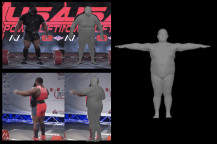

|
I am a fourth year PhD student in the Computer Vision Group at the University of Cambridge, supervised by Prof. Roberto Cipolla and Dr. Ignas Budvytis. My research interests lie in 3D reconstruction of complex, dynamic objects - such as humans. I am also broadly interested in probabilistic machine learning and generative modelling, and work towards adapting models from these fields to 3D reconstruction from 2D observations. This is a fundamentally ill-posed problem, thus motivating a probabilistic approach. Prior to my PhD, I obtained an MEng in Information Engineering from the University of Cambridge. As a student, I have interned at Cambridge Quantum under the guidance of Dr. Steven Herbert, and at the Microsoft Mixed Reality & AI Lab, where I was supervised by Dr. Pashmina Cameron and Dr. Sadegh Aliakbarian . |

|
Research

|
Akash Sengupta, Ignas Budvytis, Roberto Cipolla ICCV 2021 Paper / Video / Poster / Code 3D human pose and shape estimation from a single image is an ambiguous problem, since multiple 3D solutions can explain an observed 2D image. This work estimates a hierarchical matrix-Fisher probability distribution over body pose (i.e. rotations in SO(3)), which allows us to sample any number of plausible 3D solutions conditioned on the observed image, and quantify body-part-specific prediction uncertainty. |

|
Akash Sengupta, Ignas Budvytis, Roberto Cipolla BMVC 2021 Paper Body shape parameters in widely-used body models control global deformations over the whole body surface. Predicting probability distributions over such global shape parameters does not meaningful capture local and directional shape prediction uncertainty, e.g. due to camera angles or local occlusions. In this work, we present a simple mapping from local body measurements to global shape parameters, and use this to lift distributions over measurements to locally-uncertain distributions over body shape. |
|  |
Akash Sengupta, Ignas Budvytis, Roberto Cipolla CVPR 2021 Paper / Video / Poster This work aims to estimate body shape from a set of multiple images of a subject, without constraints on body pose, camera viewpoint, or background conditions between images. We demonstrate that previous approaches result in inaccurate or inconsistent shape estimates. Our method predicts a distribution over body shape parameters conditioned on each image, which are probabilistically combined to obtain a consistent multi-image shape estimate. |
|
Akash Sengupta, Ignas Budvytis, Roberto Cipolla BMVC 2020 Paper / Code / Data Monocular human pose and shape estimation methods often predict inaccurate body shapes, due to a scarcity of in-the-wild training data with diverse and accurate body shape labels. This work proposes an on-the-fly synthetic data generation pipeline to mitigate data scarcity. We bridge the gap between synthetic training inputs and noisy real inputs using data augmentation and corruption. Furthermore, we present a challenging evaluation dataset for human shape estimation, SSP-3D, which consists of RGB images of tightly-clothed sports-persons with a variety of body shapes paired with pseudo-ground-truth body shape and pose labels. |